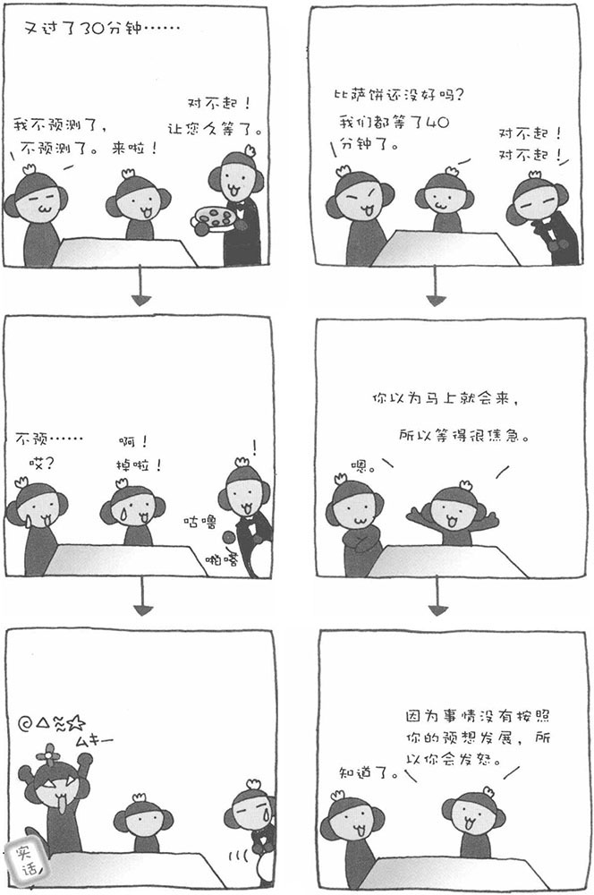

和笑一样，人都会发怒。不过，这"愤怒"的情绪到底从何而来呢？生活中，人会对行为和结果进行一定的预测。如果局面失去控制、不在自己预想的范围之内，人会感到"不安"或"恐慌"。对于"不安"或"恐慌"的防卫反应或警告反应就以"发怒"的形式体现出来。
比如，在饭店吃饭，您预计点菜之后不久就会上菜，结果等了30分钟还不见有菜上桌。此时，您也许会想："是不是他们忘了做我的菜？"于是，陷入一种不安的状态。之后，防卫反应不断发展，最后演变为愤怒的状态。也就是说，当事情没有按自己预想的发展时，人就会产生愤怒情绪。
此外，人还有一种叫做"自尊感情"的情绪，即认为自己有价值的一种感觉。这和我们平常所说的"自尊心"不是一回事。如果有人对我们说"你这个人没有价值"、"作为人，你不合格"等，就会伤害我们的自尊感情。当自尊感情受到伤害时，人就会愤怒，这是保护自己自尊感情的一种行为。
"自尊感情"高的人，对于别人的侮辱也可以宽容对待。正因为自尊感情高，不管别人怎么说自己，也不会影响自己对自己的评价，因而不会生气。然而，自尊感情低的人，只要受到一点不适当的评价，马上就会发怒。自尊感情低的人无法尊敬自己，需要从别人的尊敬中间接地获得自尊感情。因此，一旦别人否定了自己，自己也就无法尊敬自己，于是便发怒了。因此，如果平时能够多冷静地审视自己，发现自己值得尊敬的地方，提高自尊感情，就不会动不动因为一些琐碎小事而生气了。
